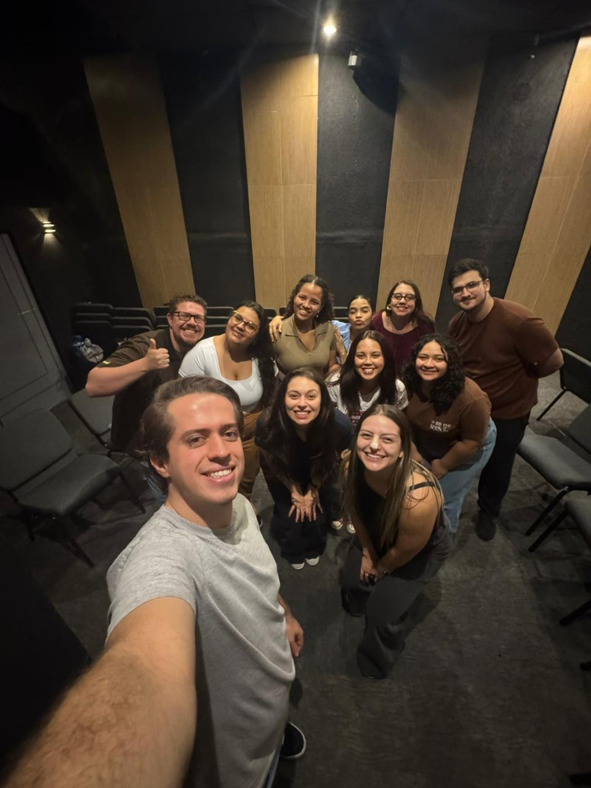

Os Pequenos Grupos são ambientes de comunhão, discipulado e crescimento espiritual. Um lugar para desenvolver relacionamentos saudáveis, compartilhar a Palavra e caminhar junto com Cristo.
Independentemente da sua fase da vida, existe um Pequeno Grupo esperando por você. Conheça nossos PGs e encontre um ambiente onde você possa crescer espiritualmente e viver em comunhão.
Um ambiente para adolescentes e jovens crescerem na Palavra, desenvolverem amizades saudáveis e viverem o propósito de Deus.
Inspirado na caminhada dos discípulos de Emaús, este PG busca proporcionar encontros transformadores através da comunhão e da presença de Deus.

Koinonia significa comunhão. Um grupo para adultos jovens que desejam fortalecer relacionamentos e crescer espiritualmente em comunidade.
"Até aqui nos ajudou o Senhor". Um ambiente de comunhão, fortalecimento espiritual e crescimento na fé.
Mais do que encontros semanais, os Pequenos Grupos são uma oportunidade de crescer em Cristo, desenvolver amizades e viver a igreja de forma mais próxima.
Quero participar